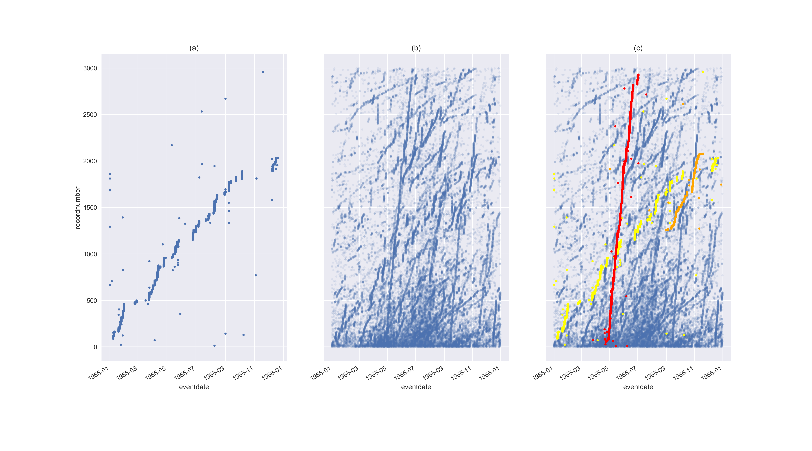

class: center, middle # (Innovative) Methodologies to approach locational data quality issues ## Nicky Nicolson ### Senior Research Leader, Biodiversity Informatics, Royal Botanic Gardens, Kew --- layout: false # Background - Outline data mining project using GBIF preserved specimen data to assert new entities: - Collector - Collecting trip - Collecting "state" run - Exploit botanical collectors practice - use recordedBy, eventDate and recordNumber as input into clustering algorithm to detect collectors - Iterative process - Once *collectors* established, further cluster their preserved specimens to detect *collecting trips* - Once *collecting trip* established, cluster their specimens to detect *collecting state runs* - intense days of collecting activity, separated by days with lesser activity, (likely travelling) ??? --- # Data mining - collectors and trips .center[  ] ??? - Previous analysis looked at authors (agents responsible for name publication) and publications (containers for scientific work) - Aim to enable similar analysis on previous stage - collecting process - Dataset bigger, messier, less complete, unstandardised, no editorial control - Designed data mining process based on minimal features, DBSCAN clustering, state-transition analysis - Detected collector, collecting trip and collecting run state aggregations - Reshaped data to investigate trends in participation - Compared with baseline --- background-image: url(images/bidgood-trips-crop.png) # Single collector: periodic trip activity --- background-image: url(images/bidgood-trip-detail-crop.png) # Sub-trip activity also periodic --- background-image: url(images/bidgood-trip-dm-crop.png) # Data mine sub-trip aggregations --- background-image: url(images/bidgood-trip-map-crop.png) # Collecting state aggregations mapped --- # Applications: duplicate indentification across institutions *Reading across* - Counted number of georeferences that could be mobilised - Identified institutions that could work together (network view of holdings and overlaps) --- # Applications: exploiting collecting event sequence *Reading along* - Constrained clustering using locality text and sequential record number - Identify reused localities --- # Conclusions